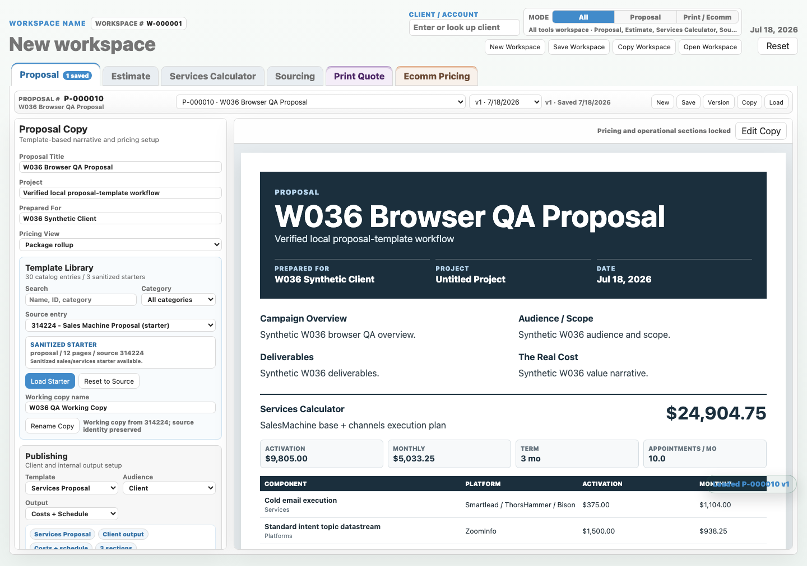
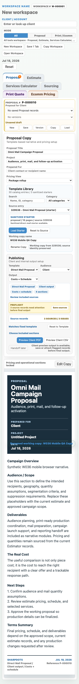

Catalog and starters
All 30 entries rendered. The three sanitized starters, 314224, 329536, and 603333, each loaded their expected proposal.
John's approved CSS-only correction was applied to the shared workspace header and generic record controls in styles.css. The same disposable PostgreSQL, desktop/mobile visual, and interaction checks were then rerun successfully from a browser-capable runtime.
1440 x 900 with no overflow, console errors, or page errors.390 x 844; document width remained exactly 390px.W036 Synthetic Client.W036 is ready for human acceptance. Pull-request preparation, deployment, live database use, and any further Estimator change remain separately gated.
All 30 entries rendered. The three sanitized starters, 314224, 329536, and 603333, each loaded their expected proposal.
All nine narrative fields updated the preview. Computed pricing and operational sections stayed locked.
A working copy was renamed while source id 314224 remained intact. Reset restored the source starter.
Synthetic Proposal P-000010 saved and loaded with its title, narrative, working name, and source identity preserved.


styles.css.Mobile rules now allow the workspace title, controls, mode switcher, and action row to shrink and stack within the shell.
Mobile rules now stack generic record-control grids and allow their action buttons to wrap instead of forcing desktop width.
styles.css was changed by this continuation.